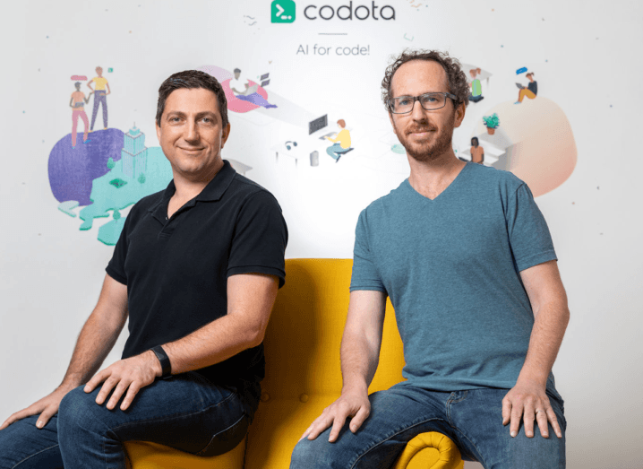

JDK 16: What’s coming in Java 16 from InfoWorld Java
Although not due to arrive until March 2021, Java Development Kit (JDK) 16 has begun to take shape, with proposed features including concurrent thread-stack processing for garbage collection, support for C++ 14 language features.
JDK 16 will be the reference implementation of the version of standard Java set to follow JDK 15, which arrived September 15. The six-month release cadence for standard Java would have JDK 16 arriving next March.
Some quote
Python 3.5 is no longer supported from Python Insider
Python 3.5 is no longer supported. There will be no more bug fixes or security patches for the 3.5 series, and Python 3.5.10 is the last release. The Python core development community recommends that all remaining Python 3.5 users should upgrade to the latest version.
CentOS 8 released!
Today, the CentOS community released the much-awaited CentOS 8 (1905). RHEL 8 was released in May this year at the Red Hat Summit 2019. Users were highly anticipating this CentOS 8 rebuild. In CentOS 8, the community has partnered more closely with Fedora and will be sharing git repos with the Fedora system.
Darklang available in private beta
Yesterday, the team behind Dark programming language has unveiled Darklang’s private beta version. Dark is a holistic programming language, editor, and infrastructure for building backends. Developers can write in the Dark language, using the Dark editor, and the program is hosted on Dark’s infrastructure. As a result, they can code without thinking about infrastructure, and have safe instant deployment, which the team is calling “deployless” development.
According to the team, backends today are too complicated to build and they have designed Dark in a way to reduce that complexity. Ellen Chisa, CEO of the Dark says, “Today we’re releasing two videos showing how Dark works. And demonstrate how to build a backend application (an office sign-in app) in 10 minutes.”
Paul Biggar, the CTO also talks about the Dark’s philosophy and the details of the language, the editor and the infrastructure. He also shows how they make “deployless” safe with feature flags and versioning, and how Dark allows to introspect and debug live requests.
Web Game Developer
We're a boutique game dev company looking for an enthusiastic web developer to join us in creating new online entertainment products (as well as perfecting existing ones), targeting our vast and diverse audience.
Duties and Responsibilities
- Developing online versions of classic puzzle/logic games (such as Mahjong, Solitaire, etc.) from scratch,
- Writing well-tested and well-documented JavaScript, HTML, CSS,
Requirements and Qualifications
- 2+ years of web development experience,
- Solid background with HTML, CSS, cross-platform and cross-browser compatibility,
- Vanilla JS, Vue or React, TypeScript,
- Webpack, git,
- Critical thinking and problem-solving skills
Python vs C++ vs C vs MATLAB which robotic language is best
Intro
Python, C++, C, and MATLAB are all popular programming languages that are used in a wide range of applications. Each language has its own strengths and weaknesses, and the choice of language will depend on the specific requirements.
Python
Python is a high-level, interpreted language that is known for its simplicity and ease of use. It is often used in scientific computing, data analysis, and machine learning. Python has a large number of libraries and modules that make it easy to perform complex tasks.
C++
C++ is a high-level, compiled language that is widely used in the development of software, games, and other applications. It is known for its speed and efficiency, and it is often used in applications that require a lot of computational power. C++ also has a large number.
Codota raises $12m for its code auto-complete technology
From left: Codota CEO Dror Weiss and CTO Eran Yahav.
Today (27 April), Israeli start-up Codota announced that it has raised $12m in Series A funding from E.ventures and Khosla Ventures. New investors TPY Capital and Hetz Ventures also joined the round. Founders Dror Weiss and Eran Yahav set up the company in 2015, building the platform using open-source code from GitHub and Stack Overflow. To date, Codota has raised more than $16m in funding for its AI software for developers. In 2019, the company acquired competitor TabNine. Along with today’s funding, the start-up also announced the launch of its complete version for JavaScript, which merges Codota’s platform with TabNine’s technology.
The start-up’s semantic AI infrastructure was created to emulate the human understanding of computer code and is based on more than a decade’s worth of academic research at Technion, the Israel Institute of Technology. Since Codota was founded, the company claims it has analysed millions of code repositories to generate insights that can boost developer productivity. Codota compares its technology to Gmail’s Smart Compose feature. The platform automates the predictable parts of the coding development cycle, such as looking up syntax and applying the best practices for using common libraries, by suggesting the next piece of code the developer may need. Codota’s platform supports all major coding languages, including Python, JavaScript, Java, C and HTML. The platform operates across popular integrated development environments such as VSCode, Eclipse and IntelliJ.